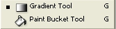
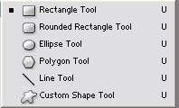
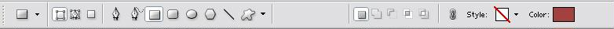
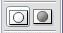
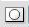

Toolbox
What we will learn
Definition
Toolbox houses icons for many uses.
Every toolbox icon has an options tool bar
Marquee Tool
-
Marquee tool : Used for selecting areas with specific geometric shapes like rectangle or oval

-
Marquee options toolbar
Move Tool
-
Move tool
 :
used to move objects or areas selected within a layer
:
used to move objects or areas selected within a layer
Lasso Tool
-
Lasso Tool: used to defined non-geometric shapes
-
Lasso options toolbox
Magic Wand Tool
-
Magic Wand Tool
 : used to select areas with similar color
: used to select areas with similar color
-
Magic Wand options toolbox

-
Magic wand tool selects the area with similar color tone.
- Tolerance option is used to vary how much you can select with this tool
Crop Tool
-
Crop Tool : used to cut up and select your graphic
-
Crop options toolbox
Slice Tool
-
Slice tool : used to defined areas in a web page
-
Slice tool is used for webpage designing
Restoration Tool
-
Restore Tool : used for touching up graphics
-
Restore Tool options
-
Healing Brush tool:
Press Alt to choose the region to copy.
Click in the region you want to paste.
-
Patch Tool:
Click Source in the options toolbox and draw an area to copy
Click destination and move the copied area to the desired place.
Drawing Tool
-
Drawing Tool

- Brush tool is used for painting or selecting areas in the quick mask mode
-
Drawing Tool options
Stamp Tool
-
Stamp tool

-
Stamp tool options
History Brushes Tool
-
History brush Tool
-
History brush tool paints the graphic as it was a step before in the History
-
Art History Brush tool can be used to apply various effects from the Art Periods
-
History Brush Options Tool
Eraser Tool
-
Eraser Tool
-
Eraser options tool
-
Eraser Tool : normal eraser tool and upon erasing it will reveal the background.
-
Background Eraser Tool: Upon using this it will make the area transparent.
-
Magic Eraser Tool: It will erase the area with the same color tone.
Fill Tools
-
Fill Tool

-
Fill tool options
Distort Tool
-
Distort Tools

-
Distort Tool options
Exposure Tool
-
Exposure Tool

- Dodge Tool: Makes the area lighter
- Burn Tool: Makes the area darker
- Sponge Tool: Makes the area more contrasting
Exposure Tools options
Type Tool
-
Type Tool

-
type tool options
Pen Tool
-
Pen Tool
-
Pen Tool options
Shape Tool
-
Shape Tool

-
Shape Tool options

Annotation Tool
-
Annotation Tool
- This tool is used for adding notes for your own reference
-
Annotation Tool options
Eyedropper and Measure Tool
-
Eyedropper and Measure Tool
-
Eyedroppper and Measure Options
Hand Tool
-
Hand Tool
- When you zoom until it spreads beyond the screen, you can use this hand tool to shift your around your picture.
Zoom Tool
-
Zoom Tool
- Press Alt to make zoom in or out
-
Zoom Tool options
Background and Foreground Swatches
-
Swatch Tool

-
Swatch Tool Options will open when you click on either the Background or Foreground Color

Mask Modes
- Mask Modes 
- Standard Mode 
- Mask Mode

- Double Click on the Mask Mode icon to open the Mask Mode Options
- Make sure that the foreground color is black is you want 100% opacity with no degree of transparency
- Choose white as the foreground if you want to erase the selected part
- Color tones between Black and White as the foreground color is used to vary the transparency of the area selected.
View Modes
- View Modes